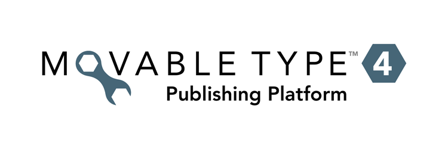

Deutsch |
English |
Español |
Français |
日本語 |
Nederlands
Русский
Welcome to Melody
Thank you for choosing Melody, the premiere solution for all your blogging needs. This file will show you how to get up and running; click on the highlighted sections for more information on that subject.
Before You Begin
Melody requires the following applications:
Upgrading Melody
If you are upgrading to Melody from a previous version, we recommend that you first back up your old installation. Then upload Melody's files over your old ones. Access Melody as you normally do, and you will be taken through the upgrade process.
Installing Melody
Before you install Melody:
- Upload all of Melody's files into a folder accessible via your web browser. (Typically, this folder is called 'mt' in the root folder of your website.
- Ensure that each .cgi file (e.g. mt.cgi, mt-search.cgi, etc) found in the Melody directory has the execute permission enabled.
- Make sure that the 'mt' folder containing the uploaded Melody files has been enabled to execute CGI scripts.
- Open that folder in your web browser (i.e. http://www.mywebsite.com/mt/).
- You should see a Melody welcome screen that will take you through the installation process. If the welcome screen does not appear, please consult our Troubleshooting Guide below.
Troubleshooting Melody
Setting up your static web path
In some web servers (and in some configurations), static files such as javascript, css and image files are not permitted inside of a cgi-bin folder. If you have installed Melody into a cgi-bin folder you will need to place your static files in another web accessible location. Read our documentation on setting up your mt-static folder.
Internal Server Errors
If you receive an "Internal Server Error" message, a configuration change may be required on your web server. Please consult our installation guide to help resolve this issue, or search our knowledge base.
Finding more help
Need additional information or support? Check out the Detailed Installation Guide.
Willkommen zu Melody
Vielen Dank, daß Sie sich für Melody entschieden haben. Hier finden Sie alles, was Sie zur Installation wissen müssen. Die Links führen zu weitergehenden Informationen.
Melody erfordert folgende Software:
Eine vorhandene Melody-Installation aktualisieren
Wenn Sie eine ältere Version auf Melody aktualisieren wollen, sollten Sie vorher eine Sicherungskopie der vorhandenen Installation erstellen. Laden Sie danach die neue Melody-Dateien in Ihr vorhandenes Melody-Verzeichnis hoch und überschreiben Sie damit die alten Dateien. Laden Sie abschließend die Melody-Oberfläche wie gewohnt. Sie werden Schritt für Schritt durch den Aktualisierungsvorgang geführt.
Melody neu installieren
Vor dem Installieren:
- Laden Sie alle zu Melody gehörenden Dateien auf Ihren Webserver hoch. Wählen Sie dabei einen mit dem Webbrowser erreichbaren Ordner. Normalerweise ist das der Ordner "mt" im Wurzelverzeichnis Ihrer Website.
- Setzen Sie mittels chmod alle .cgi-Dateien im Melody-Verzeichnis (mt.cgi, mt-search.cgi usw.) auf vom Webserver ausführbar.
- Stellen Sie sicher, daß im Ordner "mt" befindliche CGI-Skripte ausgeführt werden können.
- Öffnen Sie den Ordner "mt" in Ihrem Webbrowser (z.B. http://www.meineseite.de/mt/).
- Es erscheint eine Willkommensnachricht und Sie werden Schritt für Schritt durch den Installationsvorgang geführt. Erscheint die Willkommensnachricht nicht, beachten Sie die Hinweise im nächsten Abschnitt.
Probleme bei der Installation
Statischer Webpfad
Bei manchen Webservern oder Konfigurationen dürfen statische Dateien wie Javascript-, CSS- und Bilddateien nicht in einem cgi-bin-Ordner gespeichert werden. Wurde Melody in einem solchen installiert, sind die statischen Dateien in einem anderen vom Webbrowser erreichbaren Ordner abzulegen und dieser in der Melody-Konfiguration anzugeben: mt-static-Ordner konfigurieren.
Interne Serverfehler
Kommt es zu internen Serverfehlern ("Error 500 - Internal Server Error") ist ggf. der Webserver anders zu konfigurieren. Nähere Informationen finden Sie in der Installationsanleitung und der Wissensdatenbank.
Weitere Hilfe
Brauchen Sie weitere Informationen oder Unterstützung? Rufen Sie bitte den Detailed Installation Guide (in englischer Sprache) auf.
Bienvenido a Melody
Gracias por elegir Melody, la solución ideal para todos sus blogs. Este fichero le informa cómo ponerse en marcha; haga clic en las secciones destacadas para más información sobre esos temas.
Antes de empezar
Melody necesita las siguientes aplicaciones:
Actualización de Melody
Si está actualizando Melody desde una versión anterior, le recomendamos que primero haga una copia de seguridad de su antigua instalación. Luego, transfiera los ficheros de Melody donde estén los ficheros antiguos. Acceda a Melody como normalmente lo hace y podrá iniciar el proceso de actualización.
Instalación de Melody
Antes de instalar Melody:
- Transfiere todos los ficheros de Melody a una carpeta accesible a través de su navegador. (Generalmente, esta carpeta se llama 'mt' y está situada en el directorio raíz de su web).
- Asegúrese de que cada fichero .cgi (p.e. mt.cgi, mt-search.cgi, etc) que se encuentra en el directorio de Melody tiene los permisos de ejecución habilitados.
- Asegúrese de que la carpeta 'mt' que contiene los ficheros transferidos de Melody tiene permisos de ejecución de scripts CGI.
- Abra dicha carpeta en su navegador (p.e. http://www.misitioweb.com/mt/).
- Verá una pantalla de bienvenida a Melody, que le guiará por el proceso de instalación. Si la pantalla de bienvenida no aparece, consulte nuestra Guía de Resolución de Problemas.
Resolución de Problemas de Melody
Configuración de la ruta al web estático
En algunos servidores web (y en algunas configuraciones), los ficheros estáticos como los de javascript, hojas de estilo e imágenes, no están permitidos dentro de un directorio cgi-bin. Si instaló Melody en un directorio cgi-bin, deberá situar los ficheros estáticos en otro lugar accesible por el web. Consulte nuestra documentación sobre cómo configurar el directorio mt-static.
Errores internos del servidor
Si obtiene un mensaje de error interno del servidor ("Internal Server Error"), quizás el servidor web necesite cambios en la configuración. Por favor, consulte nuestra guía de instalación para ayudarle a resolver este asunto, o consulte nuestra base de conocimiento.
Buscando más ayuda
¿Necesita información o soporte adicional? Consulte nuestra Guía Detallada de Instalación.
Bienvenue dans Melody
Merci d'avoir choisi Melody, la solution privilégiée pour tous vos besoins en blogs. Ce fichier va vous montrer comment démarrer. Cliquez sur les sections surlignées pour avoir plus d'information sur ce sujet.
Avant de démarrer
Melody nécessite les applications suivantes:
Mettre à jour Melody
Si vous mettez à jour Melody à partir d'une version précédente, nous recommandons que vous fassiez d'abord une sauvegarde de votre ancienne installation. Ensuite mettez les nouveaux fichiers de Melody à la place des anciens fichiers. Accédez à Melody comme vous le faites d'habitude, et vous serez redirigé vers la procédure de mise à jour.
Installer Melody
Avant d'installer Melody:
- Mettez tous les fichiers de Melody dans un répertoire accessible via votre navigateur web. (Généralement, ce répertoire est nommé 'mt' à la racine de votre site web).
- Assurez-vous que chaque fichier .cgi (ex: mt.cgi, mt-search.cgi, etc) qui se trouve dans le répertoire Melody a les droits d'exécution activés.
- Assurez-vous que le répertoire 'mt' qui contient les fichiers de Melody est autorisé à exécuter les scripts CGI.
- Ouvrez ce répertoire dans votre navigateur web (ex: http://www.monSiteWeb.com/mt/).
- Vous devriez voir un écran d'accueil Melody qui vous guidera à travers la procédure d'installation. Si le message d'accueil n'apparait pas, merci de consulter notre guide de dépannage ci-dessous.
Dépanner Melody
Régler votre répertoire web statique
Avec certains serveurs web (et avec certaines configurations), les fichiers statiques comme les javascripts, les fichiers css et les images ne sont pas autorisés à l'intérieur des répertoires cgi-bin. Si vous avez installé Melody dans un répertoire cgi-bin vous devez placer vos fichiers statiques dans un autre répertoire accessible par le web. Lisez notre documentation pour régler votre répertoire mt-static.
Erreurs internes de serveur
Si vous recevez un message "Internal Server Error", un changement de configuration peut être nécessaire sur votre serveur. Merci de consulter notre guide d'installation pour vous aider à résoudre ce problème, ou recherchez dans notre base de connaissance.
Trouver plus d'aide
Vous avez besoin d'informations supplémentaires ou de support ? Lisez le Guide d'installation détaillé.
Melody へようこそ
Melody をご利用いただきありがとうございます。このファイルには、Melody を動作させるために必要な情報を記載しています。
はじめる前に
Melody を実行するには次のアプリケーションが必要です。
Perl 5.6.1 以上
ApacheやWindows IISなどのWebサーバー
MySQL、SQLite、Postgresなどのデータベースへのアクセス
以下のPerlモジュール
Perlモジュールをインストールする方法やPerlモジュールがすでにインストールされているかどうか確認する方法については、それぞれのドキュメントを参照してください。
Melody のアップグレード
以前のバージョンからMelodyへアップグレードする場合は、まず現在の環境のバックアップを作成してください。それからMelodyのファイルを以前のバージョンに上書きするようにアップロードし、Melodyに再度アクセスしてください。Melodyは自動的にアップグレードを開始します。
Melody のインストール
Melody をインストールする前に
- Melodyのファイルを、Webブラウザからアクセスできるフォルダにすべてアップロードします（通常、このフォルダにはmtという名前を付けて、Webサイトのルートフォルダの下に作成します）。
- Melodyをアップロードしたフォルダにあるcgiファイル（mt.cgi、mt-search.cgiなど）に実行権限を与えます。
- MelodyをアップロードしたフォルダでCGIスクリプトを実行できるようにします。
- そのフォルダにWebブラウザでアクセスします（たとえばhttp://www.mywebsite.com/mt/）。
- Melodyの既定のページが表示され、インストールプロセスを始めることができるようになります。ページが表示されない場合は以下のトラブルシューティングガイドに進んでください。
トラブルシューティングガイド
StaticWebPathの設定
Webサーバー（やその設定）によっては、JavaScript、CSS、画像ファイルなどの静的ファイルはcgi-binフォルダからは取得できないようになっている場合があります。その場合は、Melodyが利用する静的ファイルを別の、Webブラウザから取得できる場所に移動する必要があります。ドキュメントを参照して設定してください。
Internal Server Error
"Internal Server Error"というメッセージが出た場合は、Webサーバー上で設定を変更する必要があるかもしれません。インストールガイドに沿ってインストールを行ってください。またFAQもご確認ください。
その他
より詳しい情報はインストールガイドに掲載しています。ご確認ください。
Welkom bij Melody
Bedankt om voor Melody te kiezen, de beste oplossing voor al uw noden in verband met bloggen. Dit bestand zal u tonen hoe u van start kunt gaan; klik op de gemarkeerde secties voor meer informatie over die onderwerpen.
Voor u begint
Melody vereist volgende applicaties:
Melody Upgraden
Als u Melody aan het upgraden bent van een vorige versie, raden we aan om eerst een veiligheidskopie te maken van uw oude installatie. Upload vervolgens de bestanden van Melody over uw oude bestanden. Meld u vervolgens op de gewone manier aan bij Melody en u zal door het upgradeproces worden geleid.
Melody installeren
Voor u Melody installeert:
- Upload alle bestanden van Melody naar een map die u kunt bereiken via uw webbrowser. (Meestal is de naam die men aan deze map geeft 'mt', in de hoofdmap van de website).
- Verzeker u ervan dat alle .cgi bestanden (bv. mt.cgi, mt-search.cgi, etc) die te vinden zijn in de Melody map de execute permissie hebben.
- Controleer of de 'mt' map die de geuploade Melody bestanden bevat is ingesteld om CGI scripts te laten uitvoerenen.
- Open de map in uw webbrowser (m.a.w. surf naar http://www.mijwebsite.com/mt/).
- Er verschijnt een Melody verwelkomingsscherm dat u door het intstallatieproces zal leiden. Als het welkomstscherm niet verschijnt, kijk dan in onze troubleshooting gids hieronder.
Melody troubleshooten
Uw statisch webpad instellen
Op sommige webserver (en bij sommige configuraties), mogen statische bestanden zoals javascript, css en afbeeldingen niet in een cgi-bin map staan. Als u Melody heeft geïnstalleerd in een cgi-bin map, dan moet u uw statische bestanden op een andere, webtoegankelijke plaats zetten. Lees onze documentatie over het instellen van uw mt-static map.
Internal Server Errors
Als u een "Internal Server Error" foutboodschap krijgt, kan het zijn dat er instellingen op uw webserver aangepast moeten worden. Gelieve onze installatiegids te consulteren om dit probleem op te lossen, of doorzoek onze kennisdatabank.
Meer hulp nodig?
Bijkomende antwoorden of ondersteuning nodig? Kijk in de gedetailleerde installatiegids.
Добро пожаловать в Melody
Спасибо, что выбрали Melody — лучший инструмент для блогинга. Из этого файла вы узнаете, как установить и запустить платформу. Для получения дополнительной информации перейдите по необходимым ссылкам.
Прежде, чем начать
Для работы с Melody необходимы следующие приложения:
Perl 5.6.1 или выше;
Веб-сервер Apache или Windows IIS;
Доступ к базе данных MySQL, SQLite или Postgres;
И следующие модули Perl:
Скорее всего, вам не придётся самостоятельно устанавливать модули Perl, так как на большинстве серверов они уже установлены. В случае необходимости ознакомьтесь с документацией:
— Как узнать список установленных модулей;
— Как устанавливать модули Perl.
Обновление Melody
Если вы обновляете Melody до 4–й версии, мы рекомендуем сначала сделать резервную копию базы данных и всех файлов. После этого загрузите файлы Melody поверх предыдущей инсталляции. А затем откройте Melody в браузере, как при обычной работе, процесс обновления запустится автоматически.
Установка Melody
Прежде чем приступить к установке:
- Загрузите на сервер все файлы Melody, кроме папки «mt-static». Файлы должны быть загружены в папку «cgi-bin», в которой разрешено выполнение CGI скриптов. Например, вот как может выглядеть стандартная установка: http://example.com/cgi-bin/mt/.
- Папку «mt-static» необходимо загрузить в корневую директорию вашего сайта, чтобы доступ к ней был следующего вида: http://example.com/mt-static/.
- На все .cgi файлы (например, mt.cgi, mt-search.cgi, и т.д.), находящиеся в директории Melody, необходимо выставить права доступа (CHMOD) 755.
- Откройте Melody в браузере. Например, адрес может выглядеть так: http://moi-sait.ru/cgi-bin/mt/mt.cgi.
- Автоматически запустится инсталлятор. Следуйте инструкциям установки.
Решение проблем
Настройка пути к статическим файлам
На некоторых веб-серверах не разрешён доступ к статическим файла (изображения, таблицы стилей, javascript) в папке cgi-bin, поэтому-то и необходимо разместить папку mt-static в корневой директории сайта. Если вы разместили папку mt-static в одной директории со скриптами Melody, просто переместите её в корневую директорию. Более подробная информация о папке mt-static.
Internal Server Errors (500–я ошибка)
Чаще всего такая ошибка возникает, когда неправильно выставлены права на CGI скрипты. Для них необходимо установить права доступа 755. Но иногда такая ошибка возникает в ряде других случаев. Пожалуйста, ознакомьтесь с более подробной информацией по этой теме инсталляционном гиде или в базе знаний (вся документация на английском языке).
Дополнительная информация
Дополнительную информацию об установке и настройке Melody вы можете получить в русскоязычной Wiki.
Полезные ссылки